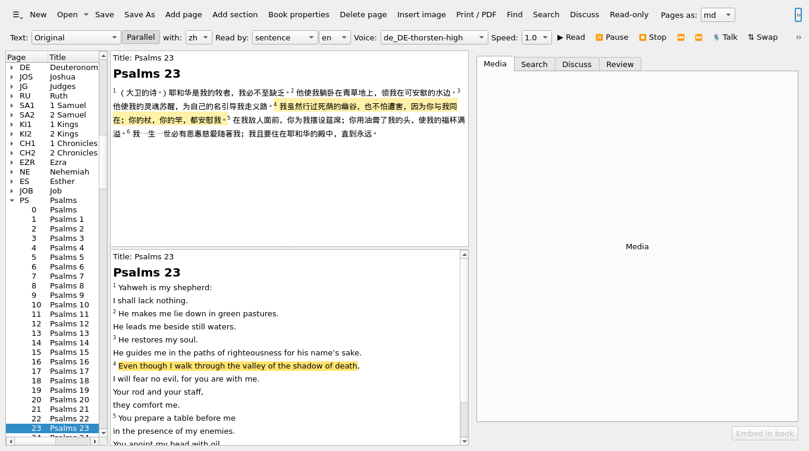
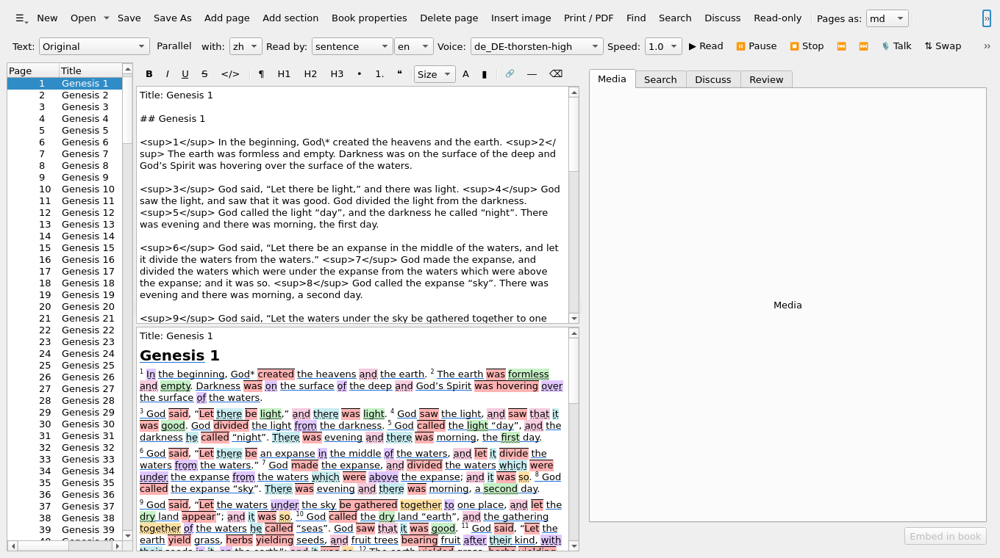
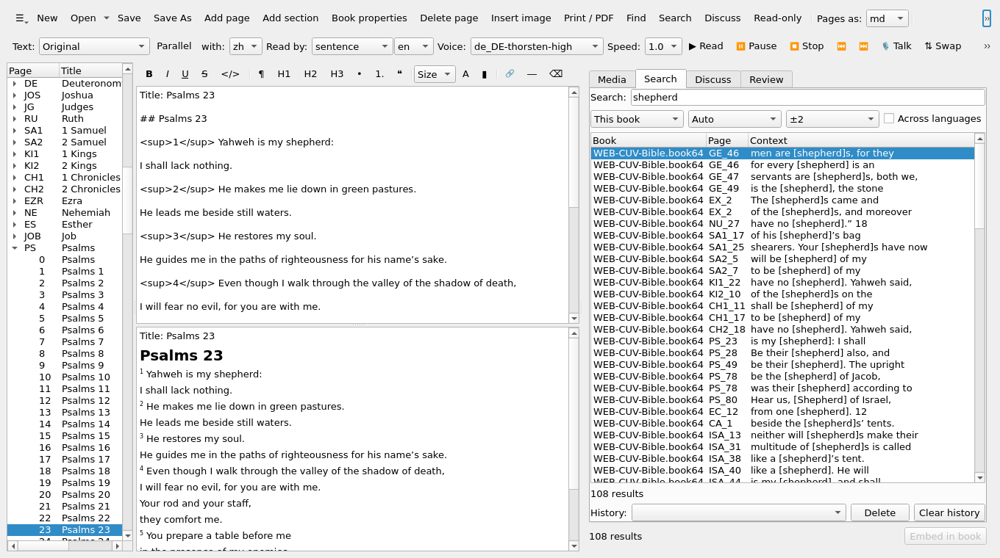
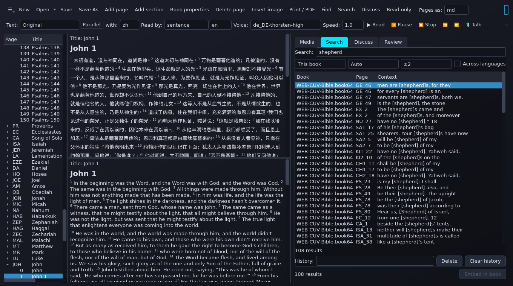

Unachoweza kufanya nayo
Soma, sikiliza, andika na ujifunze — katika kitabu kimoja kilichoonyeshwa kwa faharasa
Sikiliza kila ukurasa
Msomaji husoma kwa sauti kwa sauti za asili bila mtandao na huangazia maandishi anaposoma. Chagua jinsi inavyosonga: neno kwa neno, kifungu, sentensi, usomaji unaotiririka — au kwa kategoria ya kisarufi, ukichagua vitenzi, nomino au vivumishi.
Bora kwa mazoezi ya lugha
Punguza kasi ya sentensi, rudia kifungu kimoja, fuata sarufi kwa rangi, na sikiliza kifungu hicho hicho katika lugha ya pili. Muulize mwalimu wa AI aliyejengwa ndani kuhusu neno au mstari wowote kwenye ukurasa — kwa maandishi au kwa sauti.
Lugha mbili sambamba
Weka tafsiri kando ya kila ukurasa na uionyeshe juu ya maandishi ya awali, mstari kwa mstari au aya kwa aya. Mstari unaolingana huangaza katika lugha nyingine unaposoma au kusikiliza.
Andika vitabu vyako mwenyewe
Maingizo yenye faharasa kwa mapishi, madokezo, maneno ya nyimbo, mikusanyiko ya mashairi, nyenzo za kozi na zaidi. Panga kwa upau wa zana unaojulikana, panga kurasa katika sehemu, na upe kila ingizo kichwa, aikoni na maoni.
Vitabu vifupi au virefu
Hifadhi kifupi kilichoonyeshwa kwa faharasa .Sbook64 au kirefu .Lbook64. Kitabu kizima ni faili moja unayoweza kunakili, kuhifadhi nakala au kutuma — picha zilizopachikwa husafiri ndani yake.
Picha zilizopachikwa
Dondosha picha moja kwa moja kwenye ukurasa; huhifadhiwa ndani ya kitabu. Zipange kwenye faili kwa kutuma, au zifungue kwenye folda kwa uhariri wa haraka.
ePub ndani, ePub nje
Ingiza ePub (na Word, OpenDocument, HTML, Markdown na maandishi) na kila sura inakuwa ukurasa unaoweza kuhaririwa. Hamisha kitabu chako — au tafsiri moja tu yake — kama kitabu pepe cha ePub 3 chenye orodha ya yaliyomo, au kichapishe na kihifadhi kama PDF.
Tafuta kwenye rafu yote
Pata maneno na misemo katika kitabu kimoja au maktaba yako yote bila kufungua kila kimoja — hata kati ya lugha, kwa hivyo utafutaji wa Kiingereza unaweza kupata kifungu kinacholingana katika tafsiri.
Rafu ya faragha
Funga kurasa binafsi kwa nenosiri; kurasa zilizofungwa hazihamishwi wala kuchapishwa kamwe. Vitabu vyako vinabaki kwenye kompyuta yako mwenyewe.
Rahisi kusoma
Chagua kutoka mada kumi na nane, ikiwemo angavu na nyeusi zenye utofautishaji wa juu. Inatumika kikamilifu kutoka kwa kibodi na kwa visomaji vya skrini.
Picha za skrini
Chameleon Book64 Narrator — imenasa moja kwa moja




Chameleon Book64 Narrator
Inafanya kazi kwenye Linux leo. Bei zinawekwa sasa — wasiliana nasi kwa upatikanaji.
Wasiliana nasi